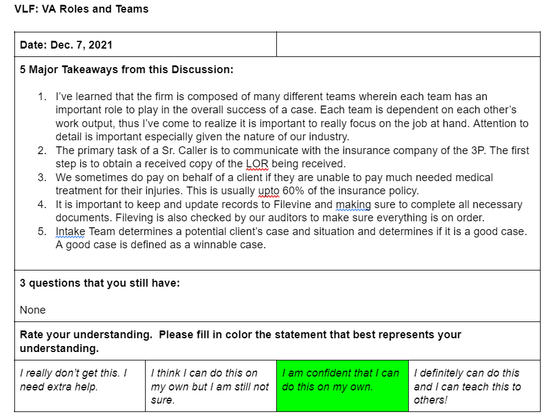
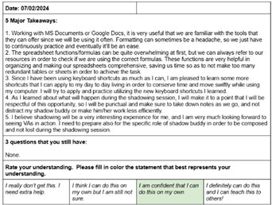

Setting of Expectations
8:00–9:00 AMBrief meeting with the trainees to provide instructions for the typing & spelling tests and to set expectations for the entire standardized classroom training.
Typing & Spelling Activity (8:00–8:10 AM)
Alternative links:
Naming Convention:
Sample Screenshots


Hubstaff To-Do Set-up (Daily Requirement)
Trainees must set their HS To-Dos daily using the following templates:
Daily To-Do Templates
Today:
All To-Dos for the training period
Shadowing Sessions: for Shadowing activities, add the following in your HS To-Do:
Example: Shadowing Intake Specialist Role/ Insurance Communication Role/ Provider Communication Role/ Lien Negotiator Role (Arlene/ Edward/ Vince/ Allesa/ Mario)
This routine helps the audit team review work easily and keeps clear records of what was completed each day — don’t miss it.
Training Reminders
Please be reminded to regularly check our #training-reminders so you’re always guided on the right things to do for your HS To-Do, deliverables, and other important reminders throughout the entire training period. Thank you.


Reading Task: Personal Injury Cases (Overview: What is personal injury?)
To be completed within the 2nd – 3rd hour of the training dayA. Go to this link and read on to get a good grasp of what we do here in the firm.
Personal Injury Cases (Overview: What is personal injury?)
B. Answer the following questions:
- What is personal injury and what are its types?
- Can you enumerate the stages of a personal injury claim on your own understanding?
- How much is the common compensation for a personal injury claim?
- How long does it take for a personal injury case to resolve?
- What are the common factors that affect a personal injury case?
- What do you think are the advantages and disadvantages of pushing for a case to litigation (going to court)?
Supplementary Tasks (while waiting)
For those who are done with the reading task, you may review your training materials, your TAM or read through this article from VLF.
VLF article (supplementary reading)
Your facilitator will share the LSH Tettra log-in credentials in the training GC.
Classroom Discussion: Virtual Assistants Essentials Training
Recorded Lecture
Watch the recorded walkthrough of this lesson.
Virtual Assistants Essentials
Breakout Session (Group Activity)
Afternoon (1:00–3:00 PM)Digital Handouts
US Legal System
LSH Services and VA Task List
LSH Clients and Clientele
Western Culture
US States and Time Zones
Process Questions
- Analyze a hypothetical case: A breach of contract with parties in two states. Which court system would have jurisdiction? Why?
- Assess the advantages and disadvantages of pursuing a case in federal court instead of state court for a personal injury claim.
- Examine the core responsibilities of a Legal VA and compare them with those of an in-house legal assistant. What are the operational implications for the firm?
- Scrutinize the challenges that solo attorneys face without VA support. How does a Legal VA help resolve these?
- Evaluate how Legal VAs contribute to law firm efficiency and client satisfaction. Which benefit do you think has the greatest long-term impact, and why?
- Assess how firm size impacts the level of autonomy, multitasking, and specialization expected of a Legal VA.
- Appraise the effectiveness of formal vs. informal communication strategies when working with different types of attorneys.
- Analyze the key cultural values in U.S. professional settings (e.g., directness, time orientation, individualism) and compare them with typical Filipino and Latin American values.
- Provide a scenario where a VA’s culturally influenced approach leads to miscommunication with a U.S.-based attorney. What were the causes?
- Critique the statement: “Filipino and Latin American Legal VAs should completely adopt American communication styles to be effective.”
Naming Convention:
Client Identification Exercise
Training Monitoring Sheet
As soon as you are done with all the tasks, kindly download your monitoring sheet below and upload it to your respective trainees' folder. Once done, please update items #1–4. Thank you.
Once you upload the training monitoring sheet to your individual trainee folder, make sure to edit and update it directly there instead of using a separate file. This is to ensure that you are working on them on time. If you've already edited the file before uploading it to the folder, that's fine. Just upload the edited sheet and in the future, make edits directly in the uploaded file in your folder. It will save automatically as you edit.
Update items 1–5 with the date when each topic was covered or discussed. When updating these items, make sure to provide all 5 takeaways — not just 2, 3, or 4. Each takeaway should be written in complete sentences. A simple sentence will suffice, rather than just words or phrases. This also helps us to assess your writing skills as well.
See sample below.


PM: PDF Editor and Smart Advocate Plug-ins
After completing your task on Personal Injury Overview, please proceed to set up your PDF editor and install the Smart Advocate plug-ins. Carefully follow the instructions provided and the screenshots of the steps below. Thank you.
PDF Editor (Nitro Pro 12)
Your facilitator will share the Nitro Pro 12 installer and its installation video in the training GC. Watch the installation video first so you don't miss anything.
How to install the Smart Advocate/SA plug-ins
1. Install the SA Document Handler/Launcher. Unzip its folder first, then right-click on the zipped file and select “Extract Here.” Proceed with the installation.


2. For Windows users, access the link and download the 2nd hyperlink to install Microsoft Word, Excel, and Outlook plugins on your desktop. Follow steps 2–7 as indicated below the list of hyperlinks on this page:


For Mac users, access the link and download the plugin on your desktop. Follow the steps indicated below the link on this page:


3. Once you have downloaded the Microsoft Word, Excel, and Outlook plugins, double-click the “Set Up” application to install.


Note: This process may take a little longer to complete the download and installation.
4. Lastly, double-click the Registry to install.


Just a heads-up, for the SA plug-ins, for now, there is no way for us to check whether they have successfully installed. We will only know if the installation was successful when we start using the firm’s CMS (SA), which is scheduled for around the 8th or 9th day of your classroom training. As long as you have this in your list of installed apps then you're good for now.

Homework: Nitro Pro and Adobe Acrobat Pro
📌 To be accomplished outside training hoursPlease watch the instructional videos on how to navigate either Nitro Pro or Adobe Acrobat Pro, depending on the software you are using. If you are using Nitro Pro, watch the Nitro Pro tutorials. If you are using Adobe Acrobat Pro, watch the Adobe Acrobat Pro tutorials. Focus on the version relevant to your available tool. Thank you.
Part 1
Part 2
For Adobe Acrobat Pro users